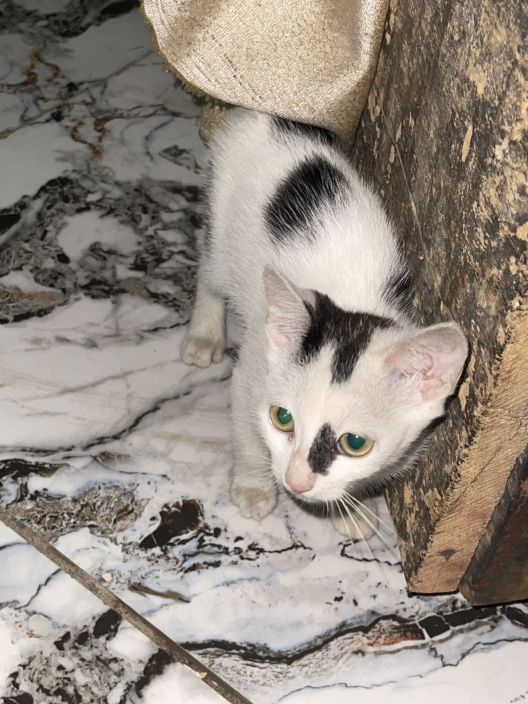
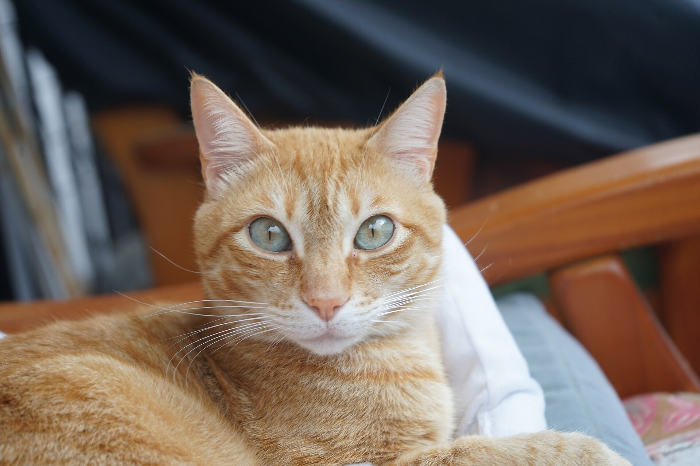
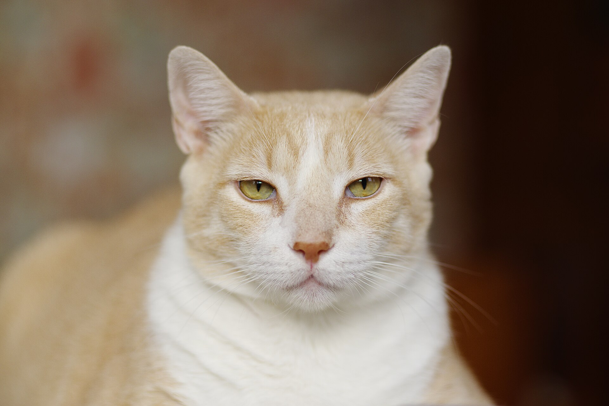
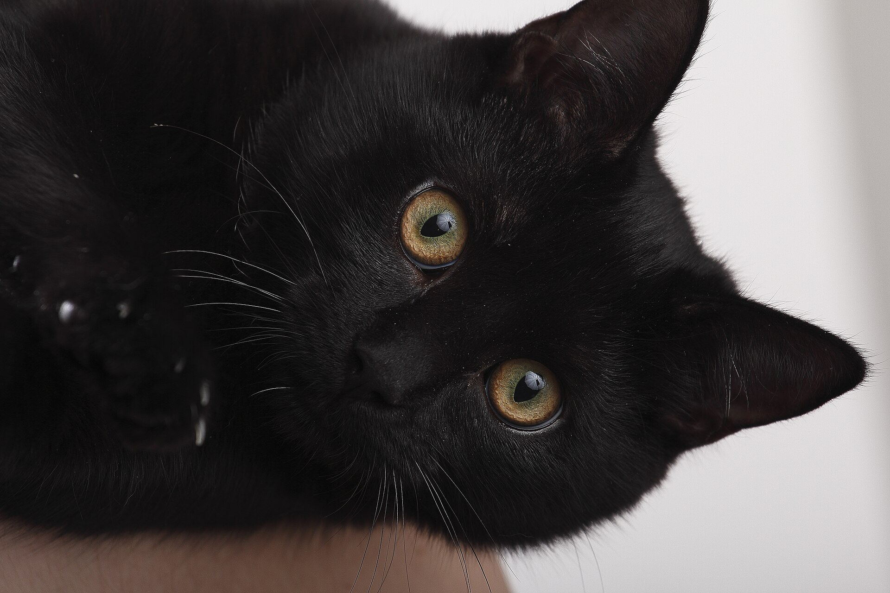

Kastrering
Hankatt kan kastreras från 4 månaders ålder och sover hemma samma kväll. Honkatt kastreras från 4 månader och hämtas hem samma eftermiddag. Smärtlindring och återbesök ingår.
1 900 krför hankatt. Honkatt 3 400 kr.
Läs om kastreringKattrummet
Katter som möter en hund i väntrummet blir stressade på ett sätt som syns på puls, andning och blodtryck. Därför är kattmottagningen skild från hundsidan. Ingången ligger runt hörnet, dörren hålls stängd och väntrummet har plats för två katter samtidigt.
Bänken torkas med kattvänligt medel mellan varje besök, så inga hunddofter ligger kvar när din katt kommer in. Buren får stå kvar på bänken under hela undersökningen, vilket betyder att katten slipper lyftas ut och in.
En vanlig kontroll tar 20 minuter. Vaccination går oftast på 15 minuter och intyget skrivs ut innan du lämnar rummet. Hundarna har sin väntan på andra sidan huset, läs gärna om hundvården.

Priser per besök
Undersökning, journal och moms ingår i priset. Unga katter klarar sig med grunderna, äldre behöver blodprov oftare.
| Ålder | Innehåll | Pris |
|---|---|---|
| Kattunge 8–16 veckor | Två besök, vaccin, chip, kastrering bokas | 1 650 kr |
| Ungkatt 1–3 år | Årskontroll, vaccin | 890 kr |
| Vuxen 4–9 år | Årskontroll, blodprov, tandkontroll | 1 350 kr |
| Senior 10 år och uppåt | Utökad kontroll, blodprov, njurvärden, blodtryck | 2 250 kr |
Alla priser är fasta och gäller per besök. Behövs flera undersökningar får du en skriftlig kostnadsuppskattning innan vi börjar. Räkna på ditt eget besök i priskalkylatorn.
Besöket
Ring 08-410 522 30 eller skicka en bokningsförfrågan. Kattiderna ligger mellan 09.00 och 15.00, då hundmottagningen har som mest att göra och kattkorridoren står tom. Du får en tid inom tre arbetsdagar.
Ställ fram buren en timme innan och lägg in en filt som luktar hemma. Täck buren med en handduk i bilen. Väl framme bär du in buren och sätter den direkt på bänken.
Först väger veterinären katten. Sedan lyssnar veterinären på hjärtat och lungorna, känner på buken och tittar i munnen. Allt sker med katten kvar i buren om den är lugn där.
Anteckningen skickas till din e-post innan klockan 18. Behövs ett återbesök bokar vi det direkt. Kräver fallet specialistvård remitterar vi vidare samma dag.
Vanliga ärenden
Sex ärenden står för ungefär 80 procent av kattbesöken hos oss. Priset nedan är vad besöket kostar när inget oväntat tillkommer.
Hankatt kan kastreras från 4 månaders ålder och sover hemma samma kväll. Honkatt kastreras från 4 månader och hämtas hem samma eftermiddag. Smärtlindring och återbesök ingår.
1 900 krför hankatt. Honkatt 3 400 kr.
Läs om kastreringHankatter har ett trångt urinrör och kan bli täta snabbt. Vi tar emot akut, gör ultraljud och urinprov på plats och svarar inom 20 minuter.
2 950 krför akuttid med ultraljud och urinprov.
Akut och jourTandsten lossas med ultraljudsscaler och tänderna röntgas innan vi rör dem. FORL, kattens vanligaste tandproblem, syns bara på röntgen och kräver att tanden dras.
4 800 krför tandstenborttagning med tandröntgen.
Läs om tandvårdLoppor, mjällkvalster och nässelutslag ger kliande katter. Vi tar hudprov, letar kvalster i mikroskop och sätter in behandling som tar bort orsaken, inte bara klådan.
690 krför hudkontroll. Behandling tillkommer.
Varannan katt vi väger ligger över sin idealvikt. Vi mäter kroppskondition, räknar ut dagsbehovet i kcal och lägger upp en foderplan över 12 veckor med två uppföljningar.
890 krför viktkontroll och foderplan.
Alla tjänsterFrån 8 års ålder stiger risken för nedsatt njurfunktion och överaktiv sköldkörtel. Vi analyserar provet i vårt eget labb medan du väntar, och svaret brukar vara klart inom 20 minuter.
1 350 krför blodprov med analys på plats.
Priser och kalkyl
Hantering
Katter är flyktdjur. En bur som skramlar och en okänd hand som lyfter gör besöket svårare än själva undersökningen. Vi jobbar i kattens takt: låg röst, inga hastiga grepp och en handduk över buren när katten vill gömma sig.
Undersökningen sker oftast med katten i buren på bänken. Behöver veterinären lyfta ut den läggs en filt över bänken först, så klorna får fäste. Att besöket tar 15 till 20 minuter är en del av behandlingen, inte ett tecken på stress.
En del katter behöver hjälp att varva ner. Då skriver vi ut ett lugnande medel som ges hemma två timmar innan besöket. Effekten räcker i fyra timmar och katten är pigg igen på kvällen.
Ställ fram buren två timmar innan avfärd och låt den stå framme i vardagsrummet med en filt som luktar hemma. Tvätta inte filten samma dag.
Täck buren med en handduk i bilen och bär den själv hela vägen in. Låt radion vara av på vägen och prata lågt med katten.
Varningssignaler
Ett enskilt tecken behöver inte betyda sjukdom, men två samtidigt ska undersökas. Ring 08-410 522 30 och beskriv vad du ser. Vi hjälper dig avgöra om det går att vänta till nästa dag eller om katten ska in direkt.


Skötsel hemma
En innekatt på 4,5 kg behöver ungefär 200 kcal per dag. Torrfoder ligger ofta på 350 kcal per 100 gram, så 55 gram täcker dagsbehovet. Väg maten med mått i två veckor; ögat underskattar mängden med upp till 30 procent.
Vatten betyder mer än många tror. Katter dricker lite av naturen och tar det mesta av vätskan via maten. Ställ fram tre skålar i olika rum, gärna en som står avskilt från maten, och byt vattnet dagligen.
Väger katten över 6 kg, eller har den tappat tio procent av kroppsvikten på ett halvår, bokar vi en viktkontroll. Då mäter vi kroppskondition, tar blodprov vid behov och följer upp vikten var fjärde vecka i 12 veckor.
Frågor och svar
Katter som aldrig går ut kan ändå smittas via skor, kläder och djur som besöker hemmet. Vi vaccinerar mot kattsnuva och kattpest, och mot rabies om katten reser eller bor på kattpensionat. Grundvaccinationen ges vid 8 och 12 veckor, sedan fylls skyddet på var 12:e till 36:e månad beroende på vaccin och ålder.
Ett vaccinationstillfälle kostar 595 kr. Intyget skrivs ut på plats och gäller på svenska pensionat. Läs mer om vaccination för hund och katt.
Katten besöker lådan oftare än vanligt, sitter kvar länge utan att det kommer något, eller slickar sig mer än vanligt under svansen. Ibland kommer bara några droppar, ibland blod. Den som kissar utanför lådan gör det av smärta, inte av trots.
Vid stopp i urinvägarna är läget akut: katten blir slö inom några timmar och kräks när njurvärdet stiger. Ring direkt i stället för att avvakta till morgonen. Vi har jourlinjen bemannad alla dagar, hela dygnet.
FORL, kattens vanligaste tandproblem, bryter ner tanden inifrån. Emaljen kan se hel ut medan rötterna redan är skadade, och sådana tänder går inte att fylla. Vi röntgar därför munnen på plats innan vi bestämmer något; läs om röntgen på kliniken. Är tanden frisk och felet litet lagar vi den i stället.
Katten får smärtlindring som räcker i tre dygn och äter mjuk mat i en vecka. De flesta äter bättre redan dagen efter, eftersom värken försvinner. Tandstenborttagning med tandröntgen kostar 4 800 kr, och en tand som dras tillkommer med 1 500 kr.
Mellan 1 och 9 års ålder räcker en kontroll om året. Från 10 år rekommenderar vi var sjätte månad, eftersom njurar och sköldkörtel ändras snabbt och symtomen kommer sent. Kontrollen tar 20 minuter och omfattar vikt, tandstatus, hjärta, lungor och buk.
Blodprov med njur- och sköldkörtelvärden läggs till från 8 års ålder och vid symptom tidigare. Priset ligger mellan 890 kr och 2 250 kr beroende på ålder och vilka prover som tas.
Hankatt åker hem samma kväll, oftast tre timmar efter ingreppet. Han sover bort resten av dagen och är sig själv nästa morgon. Honkatt hämtas hem samma eftermiddag, när hon har ätit och kissat efter narkosen.
Hemma behöver katten en tyst plats, ingen klättring på 24 timmar och mat i små portioner. Ring oss om såret blöder, om katten kräks upprepade gånger eller inte har kissat inom ett dygn.
Kattider finns oftast inom tre arbetsdagar. Akuta urinvägsbesvär tar vi emot samma dag, ring innan du åker in så möter vi upp på plats.